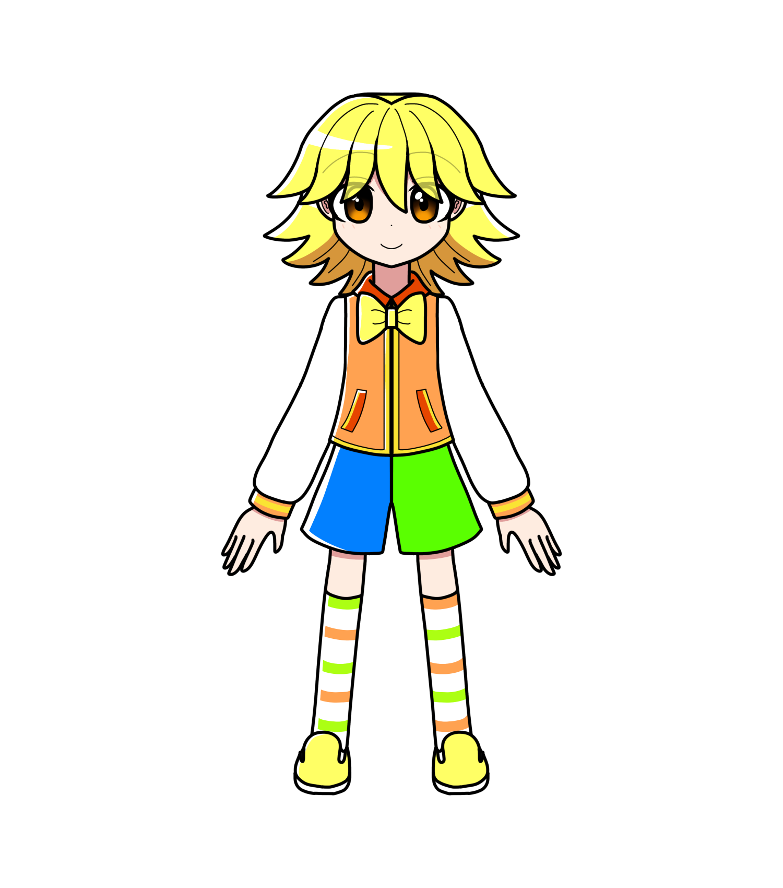

蒲公英 きいろ
概要
姉に、教師であるフードルがいる。
プロフィール
| 種族 | マリオネット |
|---|---|
| 性別 | 男性 |
| 年齢 | 16歳 |
| 誕生日 | 8月14日 |
| 身長 | 181cm |
| 血液型 | A型 |
| 出身 | カロトゥンシティ |
| イメージカラー | 黄色 |
| イメージCV | 柿原徹也 |
人物像
外見
実は右の二の腕にホクロが二つある。
性格
愉快で明るいムードメーカー。
一発ギャグ作りが趣味だが、面白さは今一つ。
根っこはおっとりしている。
謎の言い間違いをする。以下例。
秀勉（シュウベン）→秀逸のこと。
比羽倫理（ヒワリンリ）→比翼連理のこと。
とうとこいむ→同床異夢。
カレーが大好き。
スパイスがかかっている物なら何でも好き。
口調
一人称は「おれ」または「ぼく」
能力
経歴
退院後、
普段のきいろからは想像が出来ないほど
荒れ、しばらくの間自室に引きこもる。
見舞いに来てくれたルナナに対しても、
胸倉を掴み、感情のままに怒鳴り散らしたことがあった。
活躍
人物関係
茉優坂なるみ
幼馴染で彼女。
初デートの時に行った
遊園地の観覧車による事故でなるみを失う。
それがきっかけできいろの心に巨大なヒビが入り……。
ハルマ・カフィ
「師匠」と呼んで尊敬している。